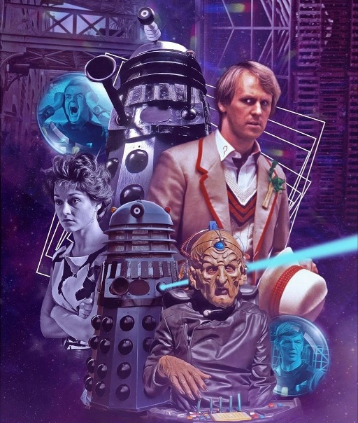
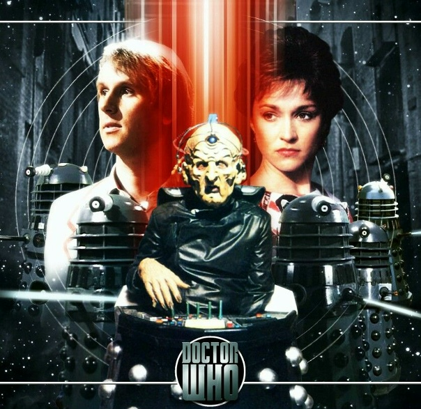

Эра Пятого Доктора (21 сезон)
<<< НАЗАД ||| 4. Воскрешение далеков ||| ДАЛЬШЕ >>>
MVO [HuracanTeam & PARUSSKI], DVO [PARUSSKI] или Original [ENG] Субтитры: Русские и Английские |  |
|---|---|
с обновленными спецэффектами MVO [HuracanTeam & PARUSSKI], DVO [PARUSSKI] или Original [ENG] Субтитры: Русские и Английские | |
с фанатским обновлением визуальных эффектов (cunningmunki) MVO [HuracanTeam & PARUSSKI], DVO [PARUSSKI] или Original [ENG] Субтитры: Русские и Английские | |
c фанатской локализацией видеоряда (HuracanTeam) MVO [HuracanTeam & PARUSSKI], DVO [PARUSSKI] или Original [ENG] Субтитры: Русские и Английские | |
Resurrection of the Daleks
Дата выхода: 8-15 февраля 1984
Формат: 4 эпизода по 25 мин.
 |  |
Далеки и их создатель Даврос содержатся в криогенном сне на космической станции в будущем. Земные солдаты охраняют их, но некая сила снаружи манипулирует временем, и на станцию прибывают наёмники, чтобы освободить Давроса. ТАРДИС тоже затягивает в эту временную аномалию. Далекам нужен Доктор — его кровь нужна для создания вируса, способного уничтожить всё человечество.
Серия примечательна высоким уровнем насилия — по ~11 трупов на эпизод, что даже вызвало жалобы зрителей. А Тиган уходит из ТАРДИС — она разочарована в Докторе и устала от насилия. В финале Пятый Доктор впервые остаётся с одним спутником.
 VHS - нояб. 1993 / Boxset - сент.2001 |  DVD+Boxset - 18 ноября 2002 |
|---|---|
DVD-SE+Boxset - 28 марта 2011 |  Blu-ray - 16 марта 2026 * версия в нашей группе |







Трейлер: